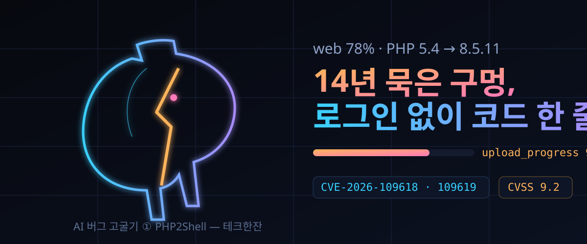

빈 파일 업로드 한 번으로 워드프레스를 따는 14년 묵은 기억장치 결함 — 웹 78% PHP 긴급 패치 해부(1편째)

결론부터. 서버 어디에나 깔려 있고 대부분 기본 설정으로 돌아가는 PHP에, 로그인도 앱 취약점도 필요 없는 원격코드실행 두 건이 있었다. 최저 판본 기준 나이가 14년이다. 어제로 4개 유지 지점에 긴급 패치가 나왔고, 지금 쓰는 배포판 패키지가 따라오는 대로 갈아치우면 끝이다.
더 예민한 구석은 찾은 주체다. 보안 기업 캘리포니아(Calif)·오픈AI·위즈(Wiz) 세 곳이 각각 AI 도구를 동원해 같은 뿌리를 겨누았고, 봉쇄 공개 이틀 전에 CVE 번호가 먼저 새나가 일정이 통째로 흔들렸다.
이 글은 'AI 버그 고굴기' 시리즈의 첫잔이다. 누가·무엇을·어떻게 찾아냈고, 내 서버에서는 오늘 뭘 건드려야 하는지까지 한 편에 끝낸다.
30초 요약
| 항목 | 내용 |
|---|---|
| 무슨 일 | PHP 핵심의 기억장치 관리·오류 처리에 원격코드실행 두 건. CVE-2026-109618(기억 초과 손상 경로)과 CVE-2026-109619(이전 요청 잔재 경로), 평가 점수 9.2 |
| 영향 범위 | PHP 5.4.0부터 8.5.11까지 — 업로드 진행률 기능이 들어온 2012년 3월 이후 전 구간. 웹의 78%가 PHP, 워드프레스만 43%(연구자 쪽 집계) |
| 무서운 지점 | 아파치 mod_php 기본 설치에서는 조건이 '없음'에 가깝다 — 인증 불필요, 앱 결함 불필요, 별도 확장 불필요 |
| 침투 확인 | 워드프레스 7.1.2·드루팔 11.4.3·주밀라 6.1.4·미디어위키 1.46.2·라라벨 13.11·심포니 8.1·넥스트클라우드 35.0.1 등 실사용 앱 11종에서 실행 증명 |
| 패치 | 10/21 릴리스 8.2.35·8.3.36·8.4.27·8.5.12에 전부 포함. 봉쇄 일정을 하루 당겨 나온 긴급 릴리스 |
| 오늘 할 일 | php -v로 판본 확인 → 배포판 패키지 대기 또는 자체 빌드. 급하면 session.upload_progress를 끄는 두 줄로 면적부터 줄이기 |
1. 무엇이 터졌나
10월 21일(현지) 새벽, PHP 프로젝트가 평상 릴리스 사이클을 무시한 채 4개 버전 짜리를 한꺼번에 던졌다. 8.2.35·8.3.36·8.4.27·8.5.12 — 이름만 보면 상례의 유지 보수인데, 안에 들어간 건 엔진 한복판을 도려낸 300개짜리 수정이다.
대상은 두 갈래다. 첫 번째(109618)는 요청이 메모리 한계(memory_limit)에 하필 잘못된 순간 부딪히면, 반쯤 만들어진 내부 구조가 나중에 유효한 것처럼 쓰이며 기억이 망가진다. 아파치 mod_php에서는 남의 서버 코드가 한 줄도 실행되기 전에 이 경로를 건드릴 수 있고, 기본 설정 그대로 코드 실행까지 증명됐다. 두 번째(109619)는 치명 오류가 나간 자리에 앞선 요청의 잔해가 남아 워커가 재사용하는 유형 — 쓰리거나 이미 놓아준 기억을 만지는 결함이다.
규모 감각은 연구 팀 쪽 집계로 잡는다. 공개 웹의 78%가 PHP를 얕고 있고 그 위에 워드프레스 하나가 43%다. 그리고 이번 결함은 앱 코드가 아니라 PHP 자체에 있었다 — 즉 사이트가 얼마나 잘 짜였는지가 무의미해지는 자리다. 해커뉴스에는 보안 경고 글이 하루 1,466표로 1위 자리에 올랐다.
2. 왜 대단한가
① '메모리 다 썼다'는 보고가 왜 무기인가. 캘리포니아 팀이 공개한 사료를 따라가 보면 결함의 출발은 흔하디흔한 초과 보고다. 업로드 요청 하나를 붙이는 것만으로 히프를 말려 죽이는 재료가, 하필 빈 파일이다. 파일명이 빈칸인 업로드 항목은 실제 용량이 0인데도 PHP는 내부 항목 여섯 개(이름·경로·종류·임시경로·오류·크기)를 전부 만들어 주고, 개수 제한에도 안 잡힌다. 여기에 files[a][b][c]처럼 이름을 중첩시키면 여섯 항목 각각에 사다리까지 별도 할당이 늘어난다. HTTP 원문은 기본 제한(8 MiB) 아래로 묶어 두고, 서버 안에서만 128 MiB 히프를 터뜨리는 배합이 성립한다.
거기서 끝이 아니다. 초과가 나는 순간 엔진은 정리 절차를 건너뛴 채 빠져나오고(longjmp 계열의 비정상 복귀), 남은 잔해가 다음에 잘못 소환된다. 연구 팀은 이런 '방해 지점'을 세 곳에서 찾아내 조립했고, 그리고 그 조립품이 mod_php 기본 설치에서의 무인증 원격코드실행이다.
② 22년 만에 되살아난 줄거리. 이 결함의 계보가 특이하다. 2004년 'PHP 보안의 사내'로 불리던 스테판 에서가 메모리 한계로 인한 원격 침투 가능성을 처음 정리했는데, 그때도 공개되지 않은 채 상용 익스플로잇 벤더 둘만 알고 있었다고 전해진다. 2020년 임시파일이 치워지지 않는다는 소박한 신고(#78876)가 그 싹이 다시 모습을 드러낸 정황이고, 2024년 OSTIF 의뢰로 콰르크슬라브가 PHP를 훑을 때 같은 뿌리가 재차 발견됐지만 '어디까지 침투하는가'를 증명하지 못해 수리 목록 뒤로 밀렸다. 2026년 7월 캘리포니아이오픈AI의 'Patch the Planet'에 끌려들어간 뒤 열흘 만에 침투 경로가 붙었고, 8월 11일 정식 신고로 수리가 엔진 전체를 훑는 대공사로 커졌다.
③ 찾은 도구가 전부 AI라는 점. 캘리포니아는 LLM 짝꿍에게 '제한 초과를 유발할 입력'과 '방해받을 수 있는 엔진 지점'을 시키고 답을 고르는 식으로 세 경로를 골라냈다고 적었다. 위즈 쪽은 자체 스캐너 아틀라스(Atlas)에 제미나이 4 아르곤·GPT-5.6 솔을 섞었다고 밝히고(해커뉴스에 공유된 위즈 정리 글 인용), 오픈AI도 같은 날 같은 뿌리를 별도 신고했다. 콰르크슬라브가 2024년에 '있긴 있을 게'로 남겨둔 것을 2026년 기계들이 열흘 만에 끄집어낸 셈이다.
④ 고장 난 조직이 같이 고쳐졌다. PHP 재단은 이번 사건의 수리가 몇 달씩 공전했던 이유를 '구조적 실패'로 인정했다 — 합의제 의사결정과 엔진을 아는 인원 부족. 이후 5월에 생태계보안팀이 생겼고, AI 보안 상주 직함이 만들어졌으며, 재단이 채용한 인력 두 명이 7·9월에 합류했다. 7월 1일 이후 공식 CVE만 15개, 그 사이에 무효·중복 신고 100건 이상을 걸러냈다고 재단은 밝혔다.
3. 바로 써먹기
운영자 기준은 단순하다. 패치가 정답이고, 설정 두 줄은 시간 벌이다.
| 대상 상태 | 확인 | 조치 |
|---|---|---|
| 자체 빌드·소싱 | php -v | 8.2.35 / 8.3.36 / 8.4.27 / 8.5.12 중 해당 지점으로 즉시 재빌드 |
| 배포판 패키지 | 배포판 보안 창고 확인 | 패키지 릴리스를 기다린 뒤 재시작. 10/21 패치본이 배포 준비 중이다 |
| 컨테이너 이미지 | 베이스 이미지 빌드 각인 | 10/21 이후 빌드된 태그로 교체 — 재빌드가 안 되면 새 이미지로 |
| 당장 못 갱신 | php.ini | 아래 두 줄로 업로드 진행률 쪽 면적 축소(전 경로 차단 아님) |
; 임시 완화 — 모든 공격 경로를 막지는 못한다
session.upload_progress.enabled = Off
session.use_only_cookies = On완화 두 줄이 막는 범위는 결함의 갈래마다 다르다. 업로드 진행률 파일을 타고 들어오는 계통과 세션 고정 계열에는 유효하지만, 메모리 초과로 엔진 상태를 망가뜨리는 본류는 세션과 무관하다. 재단도 '완전한 수리는 PHP를 올리는 것뿐'이라고 못 박았다.
가시권 한 스푼: 클라우드플론테는 이미 규칙 배포에 들어갔다(해커뉴스 93표). 프록시 앞에 물려 있는 사이트라면 대시보드 공지 한 번쯤 확인할 값어치가 있다.
4. 해외 반응 쟁점
토론장은 칭찬만은 아니었다. 쟁점은 넷으로 갈린다.
- '20년 묵은 코드를 AI가 찾음' 서사 피로. 상위 댓글 다수가 AI 발견 사고는 늘 오래된 코드에서 나온다는 패턴, 그리고 비용 비공개(연산비 몇 토큰에 찾았는지 없음)를 짚었다. 시장용 발표처럼 포장됐다는 불만도 달렸다.
- 공개까지 두 달. 8월 신고 → 10월 공개. 심각성과 견줘 인정통지에만 한 달이 흐른 점을 두고 '수리 공사가 그만큼 컸다'는 옹호와 '보안 기업의 마케팅 주기에 맞춘 것'이라는 의심이 맞섰다.
- 봉쇄 공개 자체가 붕괴했다. 공개 이틀 전 CVE 번호가 먼저 돌았는데, 붙어 나온 평점까지 틀렸다(10.0으로 새나갔고 실제는 9.2). 재단은 릴리스를 하루 당겼고, 그 혼란 중에 한 보안 기업이 데모 영상을 잘못 올렸으며, 엎치락뒤치락하는 와중에 한 이미지 회사가 봉쇄 6시간을 남기고 패치본 이미지를 먼저 내놨다. 재단은 이번 주 공개 글에 유출 경위를 별도 챕터로 실었다.
- 무기화됐나. 공개 시점까지 야생에서 기능하는 익스플로잇은 관측되지 않았다는 게 재단 설명이다. 공개 리포지토리에는 검증용 도구만 들고, 완성본은 유료 구독 전용이라는 배급 방식도 곱지 않은 시선을 받았다.
5. 마시기 전 주의
- 11종 앱 침투 증명은 캘리포니아 쪽 시연 기록이다. 내 사이트의 판본·모듈·프록시 배치가 겹치지 않으면 위험도가 크게 달라진다.
- 78%·43% 점유율은 연구 글에 적힌 집계이고, '14년'은 업로드 진행률 기능 생년월일(2012-03-01) 기준이다. 엔진 다른 경로까지 합치면 이력 계산 방식이 바뀔 수 있다.
- mod_php 외 실행 방식에서는 결과가 갈린다 — 자식 프로세스가 죽어버리는 구조면 침투가 이어 붙기 어렵다. 내 서버가 어떤 방식으로 PHP를 돌리는지 먼저 확인하라.
- 임시 완화 두 줄을 켜면 업로드 진행률 표시 UI(진행 바)가 사라진다. 사용자 화면에 의존 기능이 있는지 살펴야 한다.